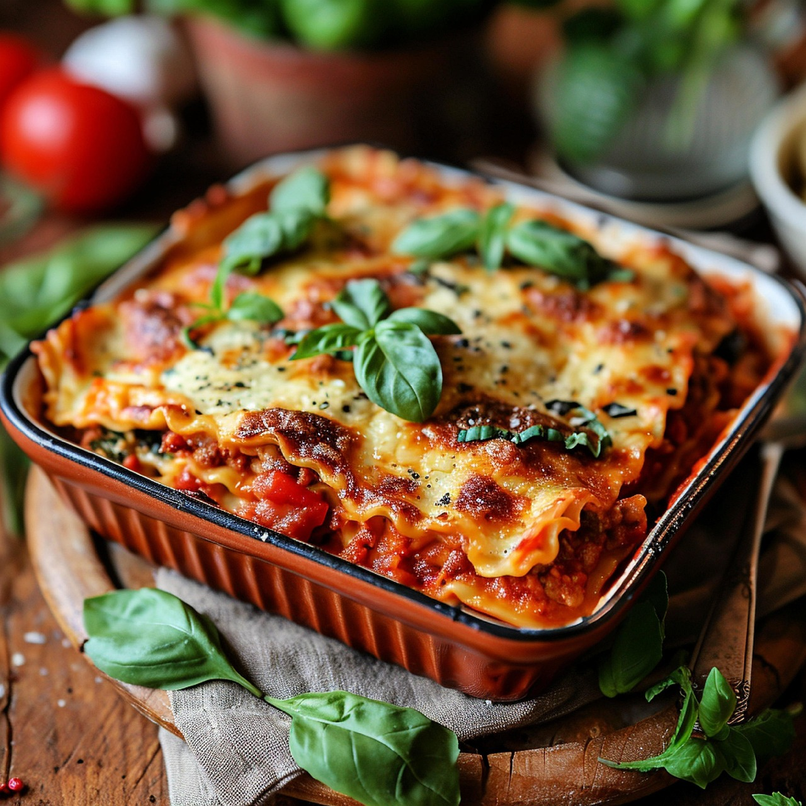

Home
Lasagna

One of the most loved foods in the world is finally here! This is a beautiful Italian Lasagna with layers of slow cooked Ragù Bolognese and Besciamella cheese sauce. Though patience is required, it is quite straight forward to make as you will see in the recipe video!
Ingedients:
- Onion,garlic,carrot and celery
- Beef
- Canned tomato and tomato paste
- Red wine - for extra flavour!
- Seasonings
- Butter,flour,milk,cheese
- Lasagna sheets
- Cheese
Steps:
- Make the meat sauce
- Layer up
- Smear a bit of sauce on the base first
- Layer 1 - top with meat sauce, bit of white sauce, and do that for all the layers
- Topping - cover with lasagna sheets, pour over remaining sauces and sprinkle with cheese
Link to the original recipe: Click here